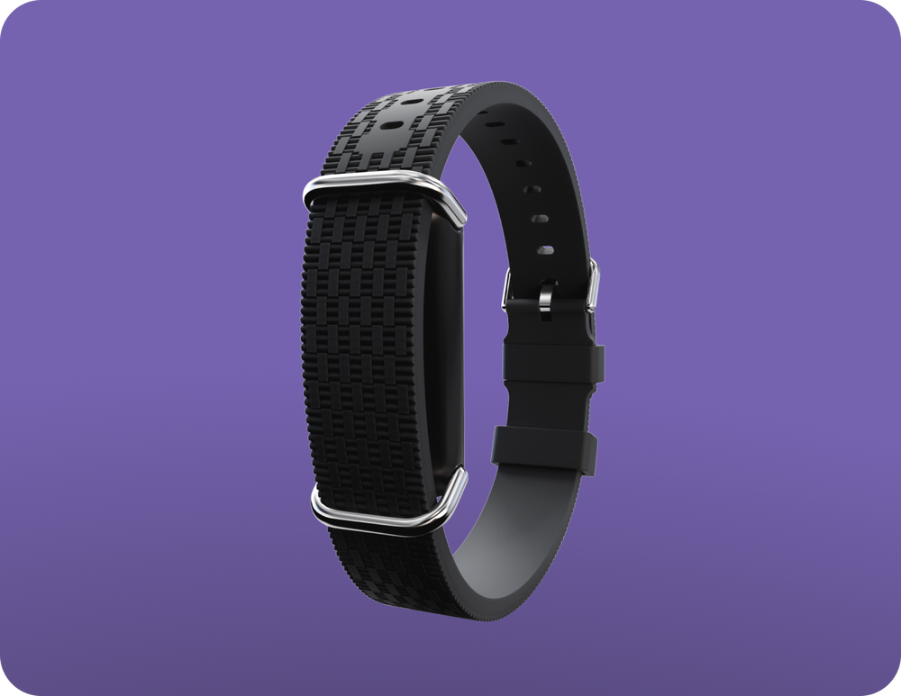

I show the evidence first.
I compare two periods and show how many nights have readings. I leave missing nights visible so the summary does not imply that the data is complete.
A MORNING BRIEF + AN AI EXPLANATION
I designed this concept for Hilo to help someone understand a repeated overnight change and prepare questions for their GP. I built a working prototype using fictional readings.
CONCEPT BYKimberley GodfreyExplore my thinking ↘I created this independently for my portfolio. Hilo has not commissioned, endorsed or clinically validated it. I use fictional health data throughout.

TRY IT / NO SIGN-UP OR REAL HEALTH DATA
I built three steps: review the pattern, request an explanation and prepare GP questions. Try them with a fictional history.
I built this as a concept using fictional data, not as a medical service. Notification previews do not send messages.
MY DESIGN DECISIONS
I wanted to show more than another chart. I designed a morning review that explains a repeated change, shows the evidence and helps someone prepare for a GP conversation.
I compare two periods and show how many nights have readings. I leave missing nights visible so the summary does not imply that the data is complete.
I designed an optional morning notification for non-urgent patterns. I keep readings inside the app and use a short lock-screen message. I included a weekly email option for people who prefer a recap.
I use a separate simulated activity feed for movement prompts. I ask for opt-in and respect quiet hours. I do not infer exercise habits from resting pulse.
I used the Claude API to turn fictional blood-pressure histories into plain-English summaries and questions to bring to a GP. I kept its role to explanation and conversation preparation. I did not design it to diagnose, triage or recommend medicine changes.
REFERENCE POINTS / BRAND & CLINICAL CONTEXT
I used these references to guide the concept, not to validate its example rules. I used Hilo’s logo, product imagery and green palette to show the idea in context; those assets remain Hilo’s property. I used Inter and a serif substitute for the display typography.